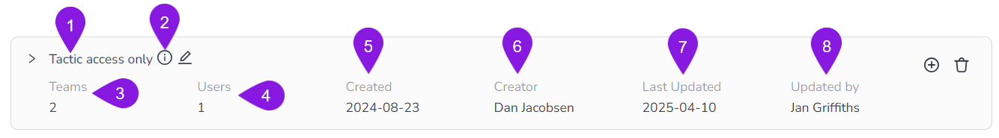
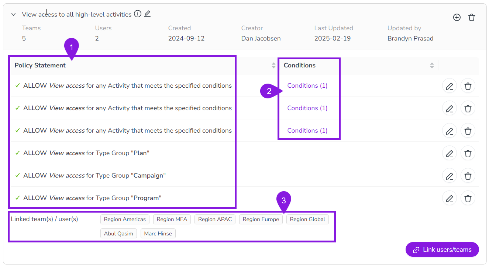
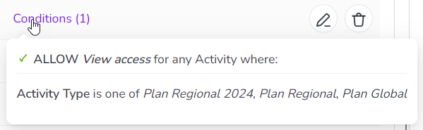

As an administrator, you can control access to the Campaign Management activities in your Uptempo instance by defining access control policies:
Access control policies consist of one or more individual statements. Each statement defines a specific access permission scope (what a user can access, and how they can access it).
After creating an access control policy, you enforce it by linking users or teams to it.
Whenever a user in your Uptempo instance interacts with Uptempo Campaign Management (the Activities section), the access control system evaluates the statements within the policies that apply to that user, and makes a decision whether to grant or deny access to the user for the interaction.
This page provides an overview of the practical aspects of managing access control for your Uptempo activities, including where to find the access control settings, and how you can use them to create and maintain access control policies for your Uptempo instance.
Open the access control policy settings
You can manage the access control policies in your Uptempo instance from the access control policy settings page.
In the Activities section, click Settings:
In the Activity Configuration menu, click Access Control > Policies.
The Policies page opens, and displays all the activity access control policies that currently exist in your Uptempo environment.
Policies page overview
Default policy view
The Policies page contains separate entries for all existing policies. Each entry contains the following details:

1. Name
The name given to the policy.
2. Description tooltip
Displays the description text entered for the policy on hover.
3. Teams
The number of teams the policy is linked to.
4. Users
The number of users the policy is linked to (not counting any users linked as part of a team).
5. Created
The date the policy was originally created.
6. Creator
The name of the administrator user who created the policy.
7. Last Updated
The date the policy was last modified.
8. Updated By
The name of the administrator user who last modified the policy.
Expanded policy view
You can expand each policy to see the statements it contains and the users or teams it is linked to.
Expand a policy
Select the policy you want to view and click the Expand button on the policy's entry.
The policy expands to display additional information.
In the expanded view, you can see the following details:

1. Policy Statement
Lists all the statements that the policy currently contains, with a description of each statement's scope.
2. Conditions
If a statement contains conditions, displays the number of conditions. On click, displays a list with details of the conditions: 
3. Linked team(s) / user(s)
Lists all the users and teams currently linked to the policy.
Access control policies are the basic organizational unit of activity access controls. Policies act as containers for access control statements, and are also used to apply those statements to specified users.
The basic workflow for setting up and configuring an access control policy is:
Create the access control policy: Set up a new access control policy to define and enforce a set of permissions for a specified set of users.
Create access control statements within the policy: Add one or more statements to the policy that define permissions granted to users connected to the policy.
Link users or teams to the policy: Connect users (either individually, or by team) to the policy to apply the permissions it defines to them.
 Settings:
Settings: